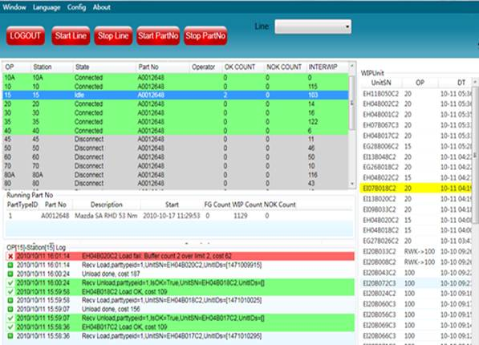

汉顺监控与追溯系统
汉顺监控与追溯系统是MDS平台上的一个应用，为客户提供生产线实施监控、物料追溯以及生产数据监控等服务。
离散制造行业的大中型企业，在企业信息化的过程中往往面临车间控制层的信息断层，如何从车间控制层高效率的获取基础数据并加以利用，就成了许多管理者面临的主要问题。
目前常见的问题诸如：
出现用户产品投诉的时候，能否根据产品文字号码追溯这批产品的所有生产过程信息？能否立即查明它的：原料供应商、操作机台、操作人员、经过的工序、生产时间日期和关键的工艺参数？
过去12小时之内生产线上出现最多的5种产品缺陷是什么？次品数量各是多少？
目前仓库以及前工序、中工序、后工序线上的每种产品数量各是多少？要分别供应给哪些供应商？何时能够及时交货？
生产线和加工设备有多少时间在生产，多少时间在停转和空转？影响设备生产潜能的最主要原因是：设备故障？调度失误？材料供应不及时？工人培训不够？还是工艺指标不合理？
能否对产品的质量检测数据自动进行统计和分析，精确区分产品质量的随机波动与异常波动，将质量隐患消灭于萌芽之中？
能否将计划层信息系统数据直接为生产制造进行服务？
能否废除人工报表，自动统计每个过程的生产数量、合格率和缺陷代码？
汉顺监控与追溯系统拥有数据采集、物料跟踪、生产监控、条码打印、打包管理、生产报表等功能，成熟稳定。多条产线的实施经验表明，汉顺监控与追溯系统可以有效的为离散制造型企业解决以上问题。
